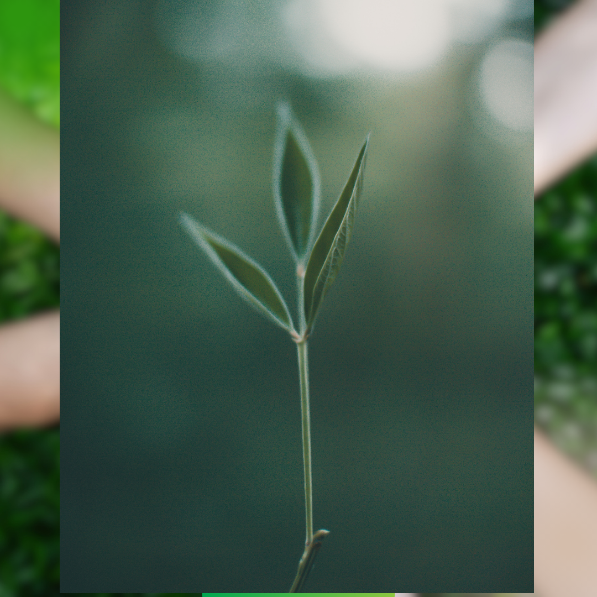

PROJETO AMIGOS DO MEIO AMBIENTE - Campinas

SOBRE NÓS

Diante das mudanças climáticas e de eventos climáticos catastróficos que temos vivido entendemos que é urgente
repensarmos o nosso modo de interagir com a natureza. Então nos propusemos a dar a nossa pequena contribuição ao nosso
planeta. Em nossa observação ,especialmente sobre as maneiras que o descarte de lixo é feita ,chegamos á conclusão de
que na verdade muitos iténs que encontramos descartados em pontos aleatórios pela nossa cidade serviria de matéria prima
para artesãos e que se promovessemos o encontro do cidadão com esses artesãos, além de retirarmos o lixo das ruas da
cidade estariamos esses artesãos a retirarem desses materiais o sustento de suas familias.
Portanto aqui está um site totalmente gratuito onde você artesão pode se cadastrar para receber materias recicláveis do seu
interesse e também onde você cidadão campineiro poderá contactar esses artesãos para fazer a sua doação de materiais
recicláveis.
CADASTRO DE ARTESÃOS
Se você é artesão e se interessa em receber materiais recicláveis do seu interesse , por favor preencha o
formulário abaixo, disponibilizaremos o seu contato para que as pessoas entrem em contato para combinar a entrega
do material.
DOAR RECICLÁVEIS
Se você assim como nós deseja uma cidade mais limpa e um planeta mais sáudavel aqui está uma ótima oportunidade!
Junte todo o material reciclável que seria descartado na lixeira ou em locais aleatórios e forneça para pessoas
com mente criativas e que irão transformar o seu lixo em renda. Aqui você irá ter acesso aos contatos de artesãos que
estão prontos para receber o seu material.
Clique no alto da página, na opção " CONTATAR ARTESÃOS" e você terá acesspo á lista de interessados em receber o seu material.
Caso o material que você tenha aí para doar não tenha sido citado no site, entre em contato conosco.
Disponibilizamos um formulário abaixo para tirar qualquer dúvida.
LISTA DE ARTESÃOS
Interessados em Garrafas Pet
Olivio Dutra Santana
Telefone 19998546623
Email dutrael@hotmail.com
Rua Pedroso Luis 52
Jardim Santa Genebra, Campinas
Interessados em tecidos
Maria Odila Carvalho
Telefone 19998547233
Email maria_23@gamail.com
Rua Pedroso Luis 52
Jardim Santa Genebra, Campinas